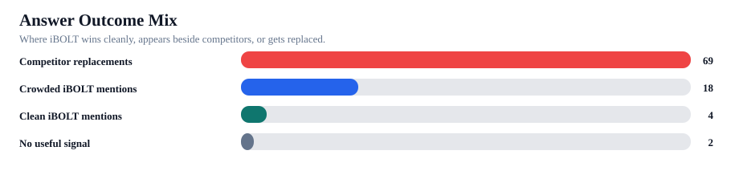
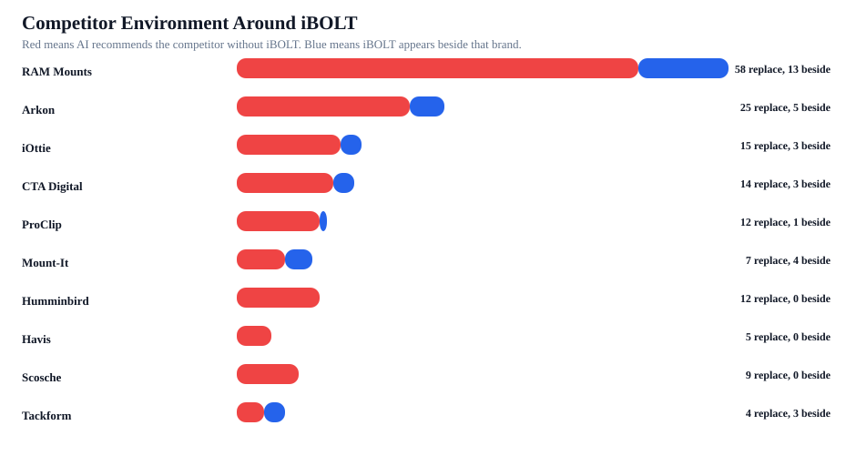

iBOLT Mention Environment Dossier
This report answers where iBOLT appears, who appears beside it, which brands replace it, which providers create those patterns, and which pages should counter each pattern.
Saved provider/prompt answers in the current benchmark.
22/93 answers mention iBOLT.
4/93 answers mention iBOLT without competitor crowding.
iBOLT appears, but competitors are in the same answer context.
69/93 answers name competitors without iBOLT.
Weighted score: clean mentions beat crowded mentions; replacements score zero.
18/18 crowded mentions include top-3, entity, or positioning support.
19/22 iBOLT mentions include product/entity signals.
93/93 rows have identity, outcome, page, and snippet/file evidence.
Queries where one provider mentions iBOLT while another replaces it.


Who We Are Mentioned Next To
These are not all bad. Co-mentions prove iBOLT is inside the consideration set. The goal is to convert crowded mentions into first-choice specialist recommendations.
| Competitor | Tier | Replaces iBOLT | Beside iBOLT | Categories | Counter angle |
|---|---|---|---|---|---|
| RAM Mounts | Default replacement threat | 58 | 13 | fleet 19; delivery 15; fishing 10; warehouse 10; restaurant 9; tablet 1 6 | RAM is the broad rugged default. Counter with iBOLT as the exact-workflow specialist: AMPS compatibility, 300+ modular parts, commercial installs, and purpose-built kits. |
| Arkon | Default replacement threat | 25 | 5 | fleet 12; restaurant 9; delivery 7; warehouse 4; tablet 3; fleet 4 2 | Arkon is showing up in generic phone and vehicle mount lists. Counter with commercial durability, locked bases, and application-specific install paths. |
| iOttie | Category pressure | 15 | 3 | delivery 13; fleet 6; fleet 1 2; tablet 2; tablet 1 2; delivery 1 1 | iOttie is a consumer car-phone default. Counter with delivery, fleet, shared-vehicle, charging, and rugged-duty needs. |
| CTA Digital | Category pressure | 14 | 3 | restaurant 15; tablet 3; tablet 1 2; warehouse 2; restaurant 12 1; restaurant 3 1 | This is a tablet/POS competitor pocket. Counter with Tablet Tower, LockPro, Dock'n Lock, multi-tablet stations, and keyed-security proof. |
| ProClip | Category pressure | 12 | 1 | fleet 8; delivery 5; warehouse 3; delivery 2 2; warehouse 1 2; delivery 4 1 | ProClip wins vehicle-specific bracket language. Counter with modular AMPS parts, drill-base options, and fleet transferability. |
| Mount-It | Comparison-set neighbor | 7 | 4 | restaurant 12; restaurant 1 1; restaurant 2 1; restaurant 4 1; restaurant 7 1 | This is a tablet/POS competitor pocket. Counter with Tablet Tower, LockPro, Dock'n Lock, multi-tablet stations, and keyed-security proof. |
| Humminbird | Category pressure | 12 | 0 | fishing 12; fishing 12 1 | This is a fishing-device or marine-accessory pocket. Counter by separating the device brand from the mounting system, plate, arm, rail, and vibration problem. |
| Havis | Monitor | 5 | 0 | warehouse 6; warehouse 2 2; warehouse 1 1; warehouse 5 1 | This is a warehouse and rugged-enterprise pocket. Counter with forklift, scanner, tablet, and no-drill mounting specifics. |
| Scosche | Category pressure | 9 | 0 | delivery 5; fleet 4; delivery 5 1; fleet 4 1 | Add fair comparison copy that names this brand and gives the exact iBOLT use case where iBOLT should be considered. |
| Tackform | Comparison-set neighbor | 4 | 3 | fleet 3; warehouse 3; delivery 2; delivery 1 2; fleet 2 2; restaurant 2 | Add fair comparison copy that names this brand and gives the exact iBOLT use case where iBOLT should be considered. |
| Garmin | Category pressure | 8 | 0 | fishing 8; fishing 8 1 | This is a fishing-device or marine-accessory pocket. Counter by separating the device brand from the mounting system, plate, arm, rail, and vibration problem. |
| Scotty | Category pressure | 8 | 0 | fishing 8; fishing 8 1 | This is a fishing-device or marine-accessory pocket. Counter by separating the device brand from the mounting system, plate, arm, rail, and vibration problem. |
| Lowrance | Monitor | 7 | 0 | fishing 7; fishing 7 1 | This is a fishing-device or marine-accessory pocket. Counter by separating the device brand from the mounting system, plate, arm, rail, and vibration problem. |
| YakAttack | Monitor | 7 | 0 | fishing 7; fishing 7 1 | This is a fishing-device or marine-accessory pocket. Counter by separating the device brand from the mounting system, plate, arm, rail, and vibration problem. |
Provider And Category Pockets
This shows where ChatGPT, Claude, and Gemini default to competitors by topic.
| Provider | Category | Answers | Mention rate | Replacement rate | Top competitors | Action |
|---|---|---|---|---|---|---|
| Claude | restaurant | 8 | 25% | 75% | CTA Digital 5; RAM Mounts 4; Mount-It 3; Arkon 2; Bouncepad 2 | Priority: add answer-first comparison and exact iBOLT product modules for this provider/category pocket. |
| Gemini | restaurant | 8 | 25% | 75% | RAM Mounts 8; CTA Digital 3; Mount-It 2; Arkon 1; Bouncepad 1 | Priority: add answer-first comparison and exact iBOLT product modules for this provider/category pocket. |
| Claude | fleet | 6 | 17% | 83% | RAM Mounts 6; ProClip 5; Arkon 4; iOttie 1 | Priority: add answer-first comparison and exact iBOLT product modules for this provider/category pocket. |
| Gemini | fleet | 6 | 17% | 83% | RAM Mounts 6; Arkon 4; iOttie 1 | Priority: add answer-first comparison and exact iBOLT product modules for this provider/category pocket. |
| ChatGPT | delivery | 7 | 29% | 71% | iOttie 6; RAM Mounts 5; Arkon 2; Tackform 1 | Priority: add answer-first comparison and exact iBOLT product modules for this provider/category pocket. |
| Claude | delivery | 7 | 29% | 71% | RAM Mounts 5; iOttie 4; Arkon 3; ProClip 2 | Priority: add answer-first comparison and exact iBOLT product modules for this provider/category pocket. |
| ChatGPT | fleet | 6 | 33% | 67% | RAM Mounts 6; Arkon 3; iOttie 3; ProClip 2; Tackform 2 | Priority: add answer-first comparison and exact iBOLT product modules for this provider/category pocket. |
| ChatGPT | restaurant | 8 | 38% | 50% | CTA Digital 6; Arkon 5; Mount-It 5; Heckler 2; Bouncepad 1 | Priority: add answer-first comparison and exact iBOLT product modules for this provider/category pocket. |
| Gemini | fishing | 5 | 0% | 80% | RAM Mounts 4 | Priority: add answer-first comparison and exact iBOLT product modules for this provider/category pocket. |
| Gemini | delivery | 7 | 29% | 57% | RAM Mounts 5; iOttie 2; ProClip 2; Arkon 1; Peak Design 1 | Priority: add answer-first comparison and exact iBOLT product modules for this provider/category pocket. |
| ChatGPT | fishing | 5 | 0% | 60% | RAM Mounts 3 | Priority: add answer-first comparison and exact iBOLT product modules for this provider/category pocket. |
| Claude | warehouse | 3 | 0% | 100% | RAM Mounts 3; Havis 2; Zebra 2 | Priority: add answer-first comparison and exact iBOLT product modules for this provider/category pocket. |
| Claude | fishing | 5 | 0% | 60% | RAM Mounts 3 | Priority: add answer-first comparison and exact iBOLT product modules for this provider/category pocket. |
| Gemini | warehouse | 3 | 0% | 100% | RAM Mounts 3; Havis 2; Arkon 1; ProClip 1; Square 1 | Priority: add answer-first comparison and exact iBOLT product modules for this provider/category pocket. |
| ChatGPT | warehouse | 3 | 67% | 33% | RAM Mounts 3; Arkon 2; Tackform 2; CTA Digital 1; Havis 1 | Monitor after priority pages are refreshed. |
| ChatGPT | tablet | 1 | 0% | 100% | Arkon 1; CTA Digital 1; RAM Mounts 1; Tackform 1 | Monitor after priority pages are refreshed. |
| Claude | tablet | 1 | 0% | 100% | Arkon 1; RAM Mounts 1 | Monitor after priority pages are refreshed. |
| Gemini | tablet | 1 | 0% | 100% | CTA Digital 1; iOttie 1; RAM Mounts 1 | Monitor after priority pages are refreshed. |
Actual iBOLT Mention Context
These rows show whether iBOLT is being described cleanly, being crowded by competitors, or showing useful product/entity signals.
| Provider | Category | Prompt | Role | Competitors | Products/signals | Read |
|---|---|---|---|---|---|---|
| Claude | restaurant | iBolt Dock’n Lock for restaurant counters | clean iBOLT mention | Dock'n Lock / Dock’n Lock; xProDock; TabDock | Protect this phrasing and make the mapped page citation-ready. | |
| Claude | delivery | ibolt phone mounts for DoorDash and Uber Eats drivers | clean iBOLT mention | TabDock; BizMount | Protect this phrasing and make the mapped page citation-ready. | |
| Claude | restaurant | iBolt vs Bouncepad vs Mount-It for restaurant tablet security | co-mentioned | Mount-It; Bouncepad | VESA | iBOLT is in the answer, but the answer still anchors to a comparison set. Strengthen iBOLT's exact specialist reason to rank. |
| ChatGPT | restaurant | iBolt Dock’n Lock for restaurant counters | co-mentioned | Arkon; Mount-It; CTA Digital | Dock'n Lock / Dock’n Lock | iBOLT is in the answer, but the answer still anchors to a comparison set. Strengthen iBOLT's exact specialist reason to rank. |
| Gemini | restaurant | iBolt Dock’n Lock for restaurant counters | co-mentioned | Kensington | Dock'n Lock / Dock’n Lock; TabDock; BizMount; AMPS | iBOLT is in the answer, but the answer still anchors to a comparison set. Strengthen iBOLT's exact specialist reason to rank. |
| ChatGPT | delivery | ibolt phone mounts for DoorDash and Uber Eats drivers | clean iBOLT mention | xProDock; TabDock; BizMount; AMPS | Protect this phrasing and make the mapped page citation-ready. | |
| ChatGPT | warehouse | best forklift tablet mount | co-mentioned | RAM Mounts; Arkon; Tackform | TabDock; BizMount; AMPS | iBOLT is in the answer, but the answer still anchors to a comparison set. Strengthen iBOLT's exact specialist reason to rank. |
| Claude | delivery | iBolt vs iOttie for delivery driving | co-mentioned | iOttie | TabDock; BizMount | iBOLT is in the answer, but the answer still anchors to a comparison set. Strengthen iBOLT's exact specialist reason to rank. |
| ChatGPT | restaurant | best tablet mount for food truck | co-mentioned | RAM Mounts; Arkon; Tackform; CTA Digital | TabDock; BizMount; AMPS | iBOLT is in the answer, but the answer still anchors to a comparison set. Strengthen iBOLT's exact specialist reason to rank. |
| ChatGPT | delivery | iBolt vs iOttie for delivery driving | co-mentioned | iOttie | xProDock; AMPS | iBOLT is in the answer, but the answer still anchors to a comparison set. Strengthen iBOLT's exact specialist reason to rank. |
| ChatGPT | fleet | iBolt vs RAM for fleet phone mounting | co-mentioned | RAM Mounts | BizMount | iBOLT is in the answer, but the answer still anchors to a comparison set. Strengthen iBOLT's exact specialist reason to rank. |
| Claude | fleet | iBolt vs RAM for fleet phone mounting | co-mentioned | RAM Mounts | TabDock | iBOLT is in the answer, but the answer still anchors to a comparison set. Strengthen iBOLT's exact specialist reason to rank. |
| Gemini | fleet | iBolt vs RAM for fleet phone mounting | co-mentioned | RAM Mounts | iBOLT is in the answer, but the answer still anchors to a comparison set. Strengthen iBOLT's exact specialist reason to rank. | |
| ChatGPT | comparison | ibolt vs ram mount | co-mentioned | RAM Mounts | TabDock; BizMount | iBOLT is in the answer, but the answer still anchors to a comparison set. Strengthen iBOLT's exact specialist reason to rank. |
| Claude | comparison | ibolt vs ram mount | co-mentioned | RAM Mounts | TabDock; BizMount | iBOLT is in the answer, but the answer still anchors to a comparison set. Strengthen iBOLT's exact specialist reason to rank. |
| Gemini | comparison | ibolt vs ram mount | co-mentioned | RAM Mounts | iBOLT is in the answer, but the answer still anchors to a comparison set. Strengthen iBOLT's exact specialist reason to rank. | |
| ChatGPT | restaurant | iBolt vs Bouncepad vs Mount-It for restaurant tablet security | co-mentioned | Mount-It; Bouncepad | iBOLT is in the answer, but the answer still anchors to a comparison set. Strengthen iBOLT's exact specialist reason to rank. | |
| Gemini | restaurant | iBolt vs Bouncepad vs Mount-It for restaurant tablet security | co-mentioned | Mount-It; Bouncepad | VESA | iBOLT is in the answer, but the answer still anchors to a comparison set. Strengthen iBOLT's exact specialist reason to rank. |
| Gemini | delivery | ibolt phone mounts for DoorDash and Uber Eats drivers | clean iBOLT mention | TabDock; BizMount; AMPS | Protect this phrasing and make the mapped page citation-ready. | |
| ChatGPT | fleet | best drill base phone mount for semi trucks | co-mentioned | RAM Mounts; Arkon; ProClip | BizMount; AMPS | iBOLT is in the answer, but the answer still anchors to a comparison set. Strengthen iBOLT's exact specialist reason to rank. |
| ChatGPT | warehouse | best tablet mount for warehouse | co-mentioned | RAM Mounts; Arkon; Tackform; CTA Digital | TabDock; BizMount; AMPS | iBOLT is in the answer, but the answer still anchors to a comparison set. Strengthen iBOLT's exact specialist reason to rank. |
| Gemini | delivery | iBolt vs iOttie for delivery driving | co-mentioned | iOttie | xProDock; TabDock | iBOLT is in the answer, but the answer still anchors to a comparison set. Strengthen iBOLT's exact specialist reason to rank. |
Competitor Replacement Context
These are the loss rows that matter most for AI visibility. They should drive page edits before retesting.
| Provider | Category | Prompt | Competitors | Mapped page | Next action |
|---|---|---|---|---|---|
| ChatGPT | tablet | best tablet mount | RAM Mounts; Arkon; Tackform; CTA Digital; Lamicall | Best Restaurant Tablet Mount in 2026: POS Stands, Delivery App Stations, and Multi-Tablet Solutions Compared | Expand existing page or convert to stronger solution page |
| Claude | tablet | best tablet mount | RAM Mounts; Arkon; Lamicall | Best Restaurant Tablet Mount in 2026: POS Stands, Delivery App Stations, and Multi-Tablet Solutions Compared | Expand existing page or convert to stronger solution page |
| Gemini | tablet | best tablet mount | RAM Mounts; iOttie; CTA Digital | Best Restaurant Tablet Mount in 2026: POS Stands, Delivery App Stations, and Multi-Tablet Solutions Compared | Expand existing page or convert to stronger solution page |
| ChatGPT | fleet | best heavy duty vehicle phone mount | RAM Mounts; Arkon; iOttie; Scosche; Tackform | Rough Water Phone Mount for Boat: Heavy-Duty Solutions That Handle the Chop | Expand existing page or convert to stronger solution page |
| ChatGPT | restaurant | best multi tablet mount | Arkon; Mount-It; CTA Digital | Best Restaurant Tablet Mount in 2026: POS Stands, Delivery App Stations, and Multi-Tablet Solutions Compared | Expand existing page or convert to stronger solution page |
| Claude | restaurant | best multi tablet mount | Mount-It; CTA Digital | Best Restaurant Tablet Mount in 2026: POS Stands, Delivery App Stations, and Multi-Tablet Solutions Compared | Expand existing page or convert to stronger solution page |
| ChatGPT | delivery | best phone mount for Amazon Flex and delivery vans | RAM Mounts; iOttie; Scosche; Belkin | Best Phone Mount for Amazon Flex and Delivery Vans | Expand existing page or convert to stronger solution page |
| ChatGPT | delivery | best phone mount for Instacart and grocery delivery drivers | RAM Mounts; iOttie; Scosche | Best Phone Mount for Instacart and Grocery Delivery Drivers | Refresh existing page for AI visibility |
| Claude | delivery | best phone mount for Instacart and grocery delivery drivers | RAM Mounts; iOttie | Best Phone Mount for Instacart and Grocery Delivery Drivers | Refresh existing page for AI visibility |
| Gemini | delivery | best phone mount for Instacart and grocery delivery drivers | RAM Mounts; iOttie; Peak Design | Best Phone Mount for Instacart and Grocery Delivery Drivers | Refresh existing page for AI visibility |
| ChatGPT | fleet | best phone mount for construction vehicles and work trucks | RAM Mounts; iOttie; Scosche; Tackform | Best Phone Mount for Construction Vehicles and Work Trucks | Refresh existing page for AI visibility |
| Gemini | fleet | best phone mount for construction vehicles and work trucks | RAM Mounts; Arkon | Best Phone Mount for Construction Vehicles and Work Trucks | Refresh existing page for AI visibility |
| ChatGPT | fishing | best fish finder | Humminbird; Garmin; Lowrance | Best Garmin Fish Finder Mount: How to Choose the Right Setup for Your Boat or Kayak | Refresh existing page for AI visibility |
| Claude | fishing | best fish finder | Humminbird; Garmin; Lowrance | Best Garmin Fish Finder Mount: How to Choose the Right Setup for Your Boat or Kayak | Refresh existing page for AI visibility |
| Gemini | fishing | best fish finder | Humminbird; Garmin | Best Garmin Fish Finder Mount: How to Choose the Right Setup for Your Boat or Kayak | Refresh existing page for AI visibility |
| ChatGPT | fishing | best fish finder in water | Humminbird; Garmin; Lowrance | Best Garmin Fish Finder Mount: How to Choose the Right Setup for Your Boat or Kayak | Refresh existing page for AI visibility |
| Claude | fishing | best fish finder in water | Humminbird; Garmin; Lowrance | Best Garmin Fish Finder Mount: How to Choose the Right Setup for Your Boat or Kayak | Refresh existing page for AI visibility |
| Gemini | fishing | best fish finder in water | Humminbird; Garmin | Best Garmin Fish Finder Mount: How to Choose the Right Setup for Your Boat or Kayak | Refresh existing page for AI visibility |
| ChatGPT | fishing | best fish finder mount for small boat | RAM Mounts; Humminbird; Scotty; YakAttack | Best Fish Finder Mount for Small Boats: Comparison and Buyer's Guide | Refresh existing page for AI visibility |
| Claude | fishing | best fish finder mount for small boat | RAM Mounts; Humminbird; Scotty; Lowrance | Best Fish Finder Mount for Small Boats: Comparison and Buyer's Guide | Refresh existing page for AI visibility |
| Gemini | fishing | best fish finder mount for small boat | RAM Mounts; Humminbird; Garmin; Scotty; YakAttack; Lowrance | Best Fish Finder Mount for Small Boats: Comparison and Buyer's Guide | Refresh existing page for AI visibility |
| ChatGPT | fleet | best phone mount for delivery drivers | RAM Mounts; iOttie; Scosche; Belkin | Best Phone Mount for Delivery Drivers | Refresh existing page for AI visibility |
| Claude | fleet | best phone mount for delivery drivers | RAM Mounts; iOttie; ProClip | Best Phone Mount for Delivery Drivers | Refresh existing page for AI visibility |
| Gemini | fleet | best phone mount for delivery drivers | RAM Mounts; iOttie | Best Phone Mount for Delivery Drivers | Refresh existing page for AI visibility |
Provider Fragility
These prompts are closest to movement because at least one provider already includes iBOLT while another provider still replaces it.
| Category | Prompt | Mentions | Replacements | Providers | Competitors | Action |
|---|---|---|---|---|---|---|
| restaurant | best tablet mount for food truck | 1 | 2 | Claude: replacement; Gemini: replacement; ChatGPT: crowded | Arkon 3; RAM Mounts 3; CTA Digital 2; Square 1; Tackform 1 | Replicate the provider that mentions iBOLT, then add direct comparison/product proof for the providers replacing iBOLT. |
| fleet | best drill base phone mount for semi trucks | 1 | 2 | Claude: replacement; Gemini: replacement; ChatGPT: crowded | Arkon 3; RAM Mounts 3; ProClip 2 | Replicate the provider that mentions iBOLT, then add direct comparison/product proof for the providers replacing iBOLT. |
| warehouse | best tablet mount for warehouse | 1 | 2 | Claude: replacement; Gemini: replacement; ChatGPT: crowded | RAM Mounts 3; Arkon 1; CTA Digital 1; Havis 1; Tackform 1 | Replicate the provider that mentions iBOLT, then add direct comparison/product proof for the providers replacing iBOLT. |
| warehouse | best forklift tablet mount | 1 | 2 | Claude: replacement; Gemini: replacement; ChatGPT: crowded | RAM Mounts 3; Arkon 1; Havis 1; ProClip 1; Tackform 1; Zebra 1 | Replicate the provider that mentions iBOLT, then add direct comparison/product proof for the providers replacing iBOLT. |
Replacement Clusters
These clusters show which brands AI tends to group together when iBOLT is absent.
| Competitor cluster | Answers | Categories | Providers | Example queries | Action |
|---|---|---|---|---|---|
| Arkon + RAM Mounts | 7 | fleet 4; restaurant 2; delivery 1 | Gemini 6; Claude 1 | best drill base phone mount for semi trucks; best ELD mount for trucks; best heavy duty vehicle phone mount; best locking phone mount for shared delivery vehicles | Build comparison language that addresses the cluster together, not just one competitor at a time. |
| Arkon + ProClip + RAM Mounts | 6 | fleet 4; delivery 2 | Claude 6 | best drill base phone mount for semi trucks; best ELD mount for trucks; best heavy duty vehicle phone mount; best locking phone mount for shared delivery vehicles | Build comparison language that addresses the cluster together, not just one competitor at a time. |
| Garmin + Humminbird + Lowrance | 4 | fishing 4 | ChatGPT 2; Claude 2 | best fish finder; best fish finder in water | Build comparison language that addresses the cluster together, not just one competitor at a time. |
| Humminbird + RAM Mounts + Scotty + YakAttack | 3 | fishing 3 | ChatGPT 2; Claude 1 | best budget fish finder mount; best fish finder mount for small boat; best kayak fish finder mount | Build comparison language that addresses the cluster together, not just one competitor at a time. |
| ProClip + RAM Mounts | 3 | delivery 2; warehouse 1 | Gemini 3 | best forklift tablet mount; best phone mount for Amazon Flex and delivery vans; commercial grade phone mount for delivery drivers | Build comparison language that addresses the cluster together, not just one competitor at a time. |
| Arkon + CTA Digital + Mount-It | 2 | restaurant 2 | ChatGPT 2 | best multi tablet mount; best restaurant tablet mount | Build comparison language that addresses the cluster together, not just one competitor at a time. |
| Arkon + RAM Mounts + Scosche + Tackform + iOttie | 2 | delivery 1; fleet 1 | ChatGPT 2 | best heavy duty vehicle phone mount; best locking phone mount for shared delivery vehicles | Build comparison language that addresses the cluster together, not just one competitor at a time. |
| Belkin + RAM Mounts + Scosche + iOttie | 2 | delivery 1; fleet 1 | ChatGPT 2 | best phone mount for Amazon Flex and delivery vans; best phone mount for delivery drivers | Build comparison language that addresses the cluster together, not just one competitor at a time. |
| CTA Digital | 2 | restaurant 2 | Claude 1; Gemini 1 | best locking tablet stand for food trucks and quick service restaurants | Build comparison language that addresses the cluster together, not just one competitor at a time. |
| Garmin + Humminbird | 2 | fishing 2 | Gemini 2 | best fish finder; best fish finder in water | Build comparison language that addresses the cluster together, not just one competitor at a time. |
| Havis + RAM Mounts + Zebra | 2 | warehouse 2 | Claude 2 | best barcode scanner mount for forklift; best forklift tablet mount | Build comparison language that addresses the cluster together, not just one competitor at a time. |
| RAM Mounts | 2 | restaurant 1; warehouse 1 | Claude 1; Gemini 1 | best tablet mount for warehouse; set up multiple tablets for DoorDash Uber Eats and Grubhub | Build comparison language that addresses the cluster together, not just one competitor at a time. |
Page Countermove Queue
Use this as the page-level bridge from answer losses to edits. The all-blog action sheet remains the master queue; this view explains why those pages matter competitively.
| Priority | Page | Category | Sprint | Competitors | Losing queries | Countermove |
|---|---|---|---|---|---|---|
| 1262 | Best Restaurant Tablet Mount in 2026: POS Stands, Delivery App Stations, and Multi-Tablet Solutions Compared | restaurant | Sprint 2 | RAM Mounts; Mount-It; Bouncepad; Arkon; CTA Digital; iOttie; Tackform; ProClip | best tablet mount,best multi tablet mount,best restaurant tablet mount | Choose the survivor page first, then merge answer blocks for best tablet mount; best multi tablet mount; best restaurant tablet mount with Install clarity, Rugged durability, Compatibility, Stability and grip proof points. Add answer-first copy that names iBOLT and says: purpose-built restaurant tablet stations, Tablet Tower, LockPro, Dock'n Lock, multi-tablet delivery app workflows, keyed security, AMPS-compatible parts. Avoid budget or cheap framing. Use durability, fit, exact workflow, warranty, and modularity instead. |
| 1087 | Best Phone Mount for Construction Vehicles and Work Trucks | fleet | Sprint 1 | RAM Mounts; ProClip; Arkon; Tackform; iOttie; Scosche; Garmin | best phone mount for construction vehicles and work trucks | Confirm survivor URL and merge duplicate signals. Choose the survivor page first, then merge answer blocks for best phone mount for construction vehicles and work trucks with Rugged durability, Install clarity, Stability and grip, Compatibility proof points. Add answer-first copy that names iBOLT and says: fleet-standardized phone and ELD mounting, drill bases, AMPS compatibility, shared-vehicle durability, device changes across routes and trucks. Avoid budget or cheap framing. Use durability, fit, exact workflow, warranty, and modularity instead. |
| 1050 | Best Garmin Fish Finder Mount: How to Choose the Right Setup for Your Boat or Kayak | fishing | Sprint 2 | RAM Mounts; Garmin; Lowrance; Humminbird; YakAttack; Scotty; Square | best budget fish finder mount,best fish finder in water,best fish finder | Choose the survivor page first, then merge answer blocks for best budget fish finder mount; best fish finder in water; best fish finder with Rugged durability, Install clarity, Compatibility, Commercial/pro use proof points. Add answer-first copy that names iBOLT and says: fish finder mounting plates, marine electronics placement, rail and handlebar mounting, vibration control, Garmin, Lowrance, and Humminbird compatibility. Avoid budget or cheap framing. Use durability, fit, exact workflow, warranty, and modularity instead. |
| 999 | Best Tablet Mount for Restaurant POS and Delivery Apps | restaurant | Sprint 1 | Square; RAM Mounts; Arkon; Mount-It; CTA Digital; Heckler; Garmin | best tablet mount for restaurant POS and delivery apps | Confirm survivor URL and merge duplicate signals. Choose the survivor page first, then merge answer blocks for best tablet mount for restaurant POS and delivery apps with Install clarity, Rugged durability, Compatibility, Stability and grip proof points. Add answer-first copy that names iBOLT and says: purpose-built restaurant tablet stations, Tablet Tower, LockPro, Dock'n Lock, multi-tablet delivery app workflows, keyed security, AMPS-compatible parts. Avoid budget or cheap framing. Use durability, fit, exact workflow, warranty, and modularity instead. |
| 978 | Best Locking Tablet Stand for Food Trucks and Quick-Service Restaurants | restaurant | Sprint 2 | Mount-It; CTA Digital; Heckler; Kensington; RAM Mounts; Arkon; Garmin | best locking tablet stand for food trucks and quick service restaurants | Confirm survivor URL and merge duplicate signals. Choose the survivor page first, then merge answer blocks for best locking tablet stand for food trucks and quick service restaurants with Install clarity, Rugged durability, Compatibility, Stability and grip proof points. Add answer-first copy that names iBOLT and says: purpose-built restaurant tablet stations, Tablet Tower, LockPro, Dock'n Lock, multi-tablet delivery app workflows, keyed security, AMPS-compatible parts. Avoid budget or cheap framing. Use durability, fit, exact workflow, warranty, and modularity instead. |
| 978 | Best Phone Mount for Amazon Flex and Delivery Vans | delivery | Sprint 2 | RAM Mounts; ProClip; Arkon; iOttie; Scosche; Belkin; Garmin | best phone mount for Amazon Flex and delivery vans | Confirm survivor URL and merge duplicate signals. Choose the survivor page first, then merge answer blocks for best phone mount for Amazon Flex and delivery vans with Rugged durability, Install clarity, Stability and grip, Compatibility proof points. Add answer-first copy that names iBOLT and says: commercial delivery phone mounting, shared-vehicle retention, locked drill-base options, suction or console setups, xProDock and Dock'n Lock product names. Avoid budget or cheap framing. Use durability, fit, exact workflow, warranty, and modularity instead. |
| 967 | Commercial-Grade Phone Mounts for Delivery Drivers | fleet | Sprint 2 | RAM Mounts; Arkon; iOttie; ProClip; Scosche | commercial grade phone mount for delivery drivers | Confirm survivor URL and merge duplicate signals. Choose the survivor page first, then merge answer blocks for commercial grade phone mount for delivery drivers with Rugged durability, Install clarity, Stability and grip, Compatibility proof points. Add answer-first copy that names iBOLT and says: fleet-standardized phone and ELD mounting, drill bases, AMPS compatibility, shared-vehicle durability, device changes across routes and trucks. Avoid budget or cheap framing. Use durability, fit, exact workflow, warranty, and modularity instead. |
| 961 | Best Locking Phone Mount for Shared Delivery Vehicles | delivery | Sprint 2 | RAM Mounts; Arkon; Tackform; iOttie; ProClip; Scosche; Garmin | best locking phone mount for shared delivery vehicles | Confirm survivor URL and merge duplicate signals. Choose the survivor page first, then merge answer blocks for best locking phone mount for shared delivery vehicles with Rugged durability, Install clarity, Stability and grip, Compatibility proof points. Add answer-first copy that names iBOLT and says: commercial delivery phone mounting, shared-vehicle retention, locked drill-base options, suction or console setups, xProDock and Dock'n Lock product names. Avoid budget or cheap framing. Use durability, fit, exact workflow, warranty, and modularity instead. |
| 951 | Best Phone Mount for Instacart and Grocery Delivery Drivers | delivery | Sprint 1 | RAM Mounts; iOttie; Peak Design; Scosche; Garmin | best phone mount for Instacart and grocery delivery drivers | Confirm survivor URL and merge duplicate signals. Choose the survivor page first, then merge answer blocks for best phone mount for Instacart and grocery delivery drivers with Rugged durability, Install clarity, Stability and grip, Compatibility proof points. Add answer-first copy that names iBOLT and says: commercial delivery phone mounting, shared-vehicle retention, locked drill-base options, suction or console setups, xProDock and Dock'n Lock product names. Avoid budget or cheap framing. Use durability, fit, exact workflow, warranty, and modularity instead. |
| 922 | Best Fish Finder Mount for Pontoon Boat Rails | fishing | Sprint 2 | RAM Mounts; Garmin; Lowrance; Humminbird; YakAttack; Scotty | best fish finder mount for small boat | Confirm survivor URL and merge duplicate signals. Choose the survivor page first, then merge answer blocks for best fish finder mount for small boat with Rugged durability, Install clarity, Compatibility, Commercial/pro use proof points. Add answer-first copy that names iBOLT and says: fish finder mounting plates, marine electronics placement, rail and handlebar mounting, vibration control, Garmin, Lowrance, and Humminbird compatibility. Avoid budget or cheap framing. Use durability, fit, exact workflow, warranty, and modularity instead. |
| 902 | Best Kayak Fish Finder Mounts for Secure Removable Setups | fishing | Sprint 2 | RAM Mounts; Garmin; YakAttack; Lowrance; Humminbird; Scotty | best kayak fish finder mount | Choose the survivor page first, then merge answer blocks for best kayak fish finder mount with Rugged durability, Install clarity, Compatibility, Commercial/pro use proof points. Add answer-first copy that names iBOLT and says: fish finder mounting plates, marine electronics placement, rail and handlebar mounting, vibration control, Garmin, Lowrance, and Humminbird compatibility. Avoid budget or cheap framing. Use durability, fit, exact workflow, warranty, and modularity instead. |
| 872 | Best Phone Mount for Delivery Drivers | delivery | Sprint 2 | iOttie; RAM Mounts; ProClip; Scosche; Belkin; LISEN | best phone mount for delivery drivers | Confirm survivor URL and merge duplicate signals. Choose the survivor page first, then merge answer blocks for best phone mount for delivery drivers with Rugged durability, Install clarity, Stability and grip, Compatibility proof points. Add answer-first copy that names iBOLT and says: commercial delivery phone mounting, shared-vehicle retention, locked drill-base options, suction or console setups, xProDock and Dock'n Lock product names. Avoid budget or cheap framing. Use durability, fit, exact workflow, warranty, and modularity instead. |
| 867 | Best Barcode Scanner Mounts for Forklifts and Warehouses (2026) | warehouse | Sprint 2 | RAM Mounts; Arkon; Square; ProClip; Havis; Zebra; Garmin | best barcode scanner mount for forklift | Choose the survivor page first, then merge answer blocks for best barcode scanner mount for forklift with Rugged durability, Install clarity, Stability and grip, Compatibility proof points. Add answer-first copy that names iBOLT and says: forklift tablet mounts, barcode scanner holders, no-drill cage or pillar setups, vibration resistance, Zebra and Honeywell workflow language. Avoid budget or cheap framing. Use durability, fit, exact workflow, warranty, and modularity instead. |
| 865 | Best Forklift Tablet Mounts for Warehouses (2026 Comparison) | warehouse | Sprint 2 | RAM Mounts; ProClip; Havis; Zebra; Arkon; CTA Digital; Tackform; Garmin | best tablet mount for warehouse,best forklift tablet mount | Choose the survivor page first, then merge answer blocks for best tablet mount for warehouse; best forklift tablet mount with Rugged durability, Install clarity, Stability and grip, Compatibility proof points. Add answer-first copy that names iBOLT and says: forklift tablet mounts, barcode scanner holders, no-drill cage or pillar setups, vibration resistance, Zebra and Honeywell workflow language. Avoid budget or cheap framing. Use durability, fit, exact workflow, warranty, and modularity instead. |
| 854 | Best Tablet and Phone Mounts for Trucks and ELD Compliance (2026) | fleet | Sprint 2 | RAM Mounts; ProClip; Arkon; Scosche; Tackform; Mount-It; Garmin | best ELD mount for trucks | Choose the survivor page first, then merge answer blocks for best ELD mount for trucks with Rugged durability, Install clarity, Stability and grip, Compatibility proof points. Add answer-first copy that names iBOLT and says: fleet-standardized phone and ELD mounting, drill bases, AMPS compatibility, shared-vehicle durability, device changes across routes and trucks. Avoid budget or cheap framing. Use durability, fit, exact workflow, warranty, and modularity instead. |
| 850 | How to Set Up Multiple Tablets for DoorDash, Uber Eats, and Grubhub | delivery | Sprint 2 | RAM Mounts; Arkon; Garmin; RAM | set up multiple tablets for DoorDash Uber Eats and Grubhub | Choose the survivor page first, then merge answer blocks for set up multiple tablets for DoorDash Uber Eats and Grubhub with Rugged durability, Install clarity, Stability and grip, Compatibility proof points. Add answer-first copy that names iBOLT and says: commercial delivery phone mounting, shared-vehicle retention, locked drill-base options, suction or console setups, xProDock and Dock'n Lock product names. Avoid budget or cheap framing. Use durability, fit, exact workflow, warranty, and modularity instead. |
| 828 | Rough Water Phone Mount for Boat: Heavy-Duty Solutions That Handle the Chop | fishing | Sprint 2 | Arkon; RAM Mounts; iOttie; ProClip; Tackform; Garmin; Scosche | best heavy duty vehicle phone mount | Choose the survivor page first, then merge answer blocks for best heavy duty vehicle phone mount with Rugged durability, Install clarity, Compatibility, Commercial/pro use proof points. Add answer-first copy that names iBOLT and says: fish finder mounting plates, marine electronics placement, rail and handlebar mounting, vibration control, Garmin, Lowrance, and Humminbird compatibility. Avoid budget or cheap framing. Use durability, fit, exact workflow, warranty, and modularity instead. |
| 821 | Magnetic vs Clamp Phone Mounts for Delivery Work | amps/modular | Sprint 2 | RAM Mounts; iOttie; Scosche; Quad Lock; Belkin; Garmin | magnetic vs clamp phone mounts for delivery work | Confirm survivor URL and merge duplicate signals. Choose the survivor page first, then merge answer blocks for magnetic vs clamp phone mounts for delivery work with Install clarity, Rugged durability, Compatibility, Stability and grip proof points. |
| 789 | Best Drill-Base Phone Mount for Semi Trucks | fleet | Sprint 2 | Arkon; RAM Mounts; ProClip; Garmin | best drill base phone mount for semi trucks | Choose the survivor page first, then merge answer blocks for best drill base phone mount for semi trucks with Rugged durability, Install clarity, Stability and grip, Compatibility proof points. Add answer-first copy that names iBOLT and says: fleet-standardized phone and ELD mounting, drill bases, AMPS compatibility, shared-vehicle durability, device changes across routes and trucks. Avoid budget or cheap framing. Use durability, fit, exact workflow, warranty, and modularity instead. |
| 738 | Best Tablet Mount for Utility Truck Crews | fleet | Sprint 2 | RAM Mounts; Arkon; Square; CTA Digital; Tackform; Garmin | best tablet mount for food truck | Choose the survivor page first, then merge answer blocks for best tablet mount for food truck with Rugged durability, Install clarity, Stability and grip, Compatibility proof points. Add answer-first copy that names iBOLT and says: fleet-standardized phone and ELD mounting, drill bases, AMPS compatibility, shared-vehicle durability, device changes across routes and trucks. Avoid budget or cheap framing. Use durability, fit, exact workflow, warranty, and modularity instead. |
| 700 | iBOLT Phone Mounts for DoorDash and Uber Eats Drivers | delivery | Backlog | Garmin | ibolt phone mounts for DoorDash and Uber Eats drivers | Choose the survivor page first, then merge answer blocks for ibolt phone mounts for DoorDash and Uber Eats drivers with Rugged durability, Install clarity, Stability and grip, Compatibility proof points. Add answer-first copy that names iBOLT and says: commercial delivery phone mounting, shared-vehicle retention, locked drill-base options, suction or console setups, xProDock and Dock'n Lock product names. Avoid budget or cheap framing. Use durability, fit, exact workflow, warranty, and modularity instead. |
| 662 | iBOLT vs RAM for Fleet Phone Mounting | fleet | Backlog | RAM Mounts; Garmin | iBolt vs RAM for fleet phone mounting | Confirm survivor URL and merge duplicate signals. Choose the survivor page first, then merge answer blocks for iBOLT vs RAM for fleet phone mounting with Rugged durability, Install clarity, Stability and grip, Compatibility proof points. Add answer-first copy that names iBOLT and says: fleet-standardized phone and ELD mounting, drill bases, AMPS compatibility, shared-vehicle durability, device changes across routes and trucks. Avoid budget or cheap framing. Use durability, fit, exact workflow, warranty, and modularity instead. |
| 594 | iBOLT vs iOttie for Delivery Driving | delivery | Backlog | RAM Mounts; iOttie; Garmin | iBolt vs iOttie for delivery driving | Choose the survivor page first, then merge answer blocks for iBOLT vs iOttie for delivery driving with Rugged durability, Install clarity, Stability and grip, Compatibility proof points. Add answer-first copy that names iBOLT and says: commercial delivery phone mounting, shared-vehicle retention, locked drill-base options, suction or console setups, xProDock and Dock'n Lock product names. Avoid budget or cheap framing. Use durability, fit, exact workflow, warranty, and modularity instead. |
| 579 | iBOLT Dock'n Lock for Restaurant Counters | restaurant | Backlog | Arkon; CTA Digital; Kensington; Mount-It; RAM Mounts; Garmin | iBolt Dock’n Lock for restaurant counters | Choose the survivor page first, then merge answer blocks for iBOLT Dock’n Lock for restaurant counters with Install clarity, Rugged durability, Compatibility, Stability and grip proof points. Add answer-first copy that names iBOLT and says: purpose-built restaurant tablet stations, Tablet Tower, LockPro, Dock'n Lock, multi-tablet delivery app workflows, keyed security, AMPS-compatible parts. Avoid budget or cheap framing. Use durability, fit, exact workflow, warranty, and modularity instead. |
| 524 | Why Delivery Drivers Need a Commercial-Grade Phone Mount | delivery | Backlog | Garmin | Confirm survivor URL and merge duplicate signals. Choose the survivor page first, then merge answer blocks for mapped buyer prompts with Rugged durability, Install clarity, Stability and grip, Compatibility proof points. Add answer-first copy that names iBOLT and says: commercial delivery phone mounting, shared-vehicle retention, locked drill-base options, suction or console setups, xProDock and Dock'n Lock product names. Avoid budget or cheap framing. Use durability, fit, exact workflow, warranty, and modularity instead. |